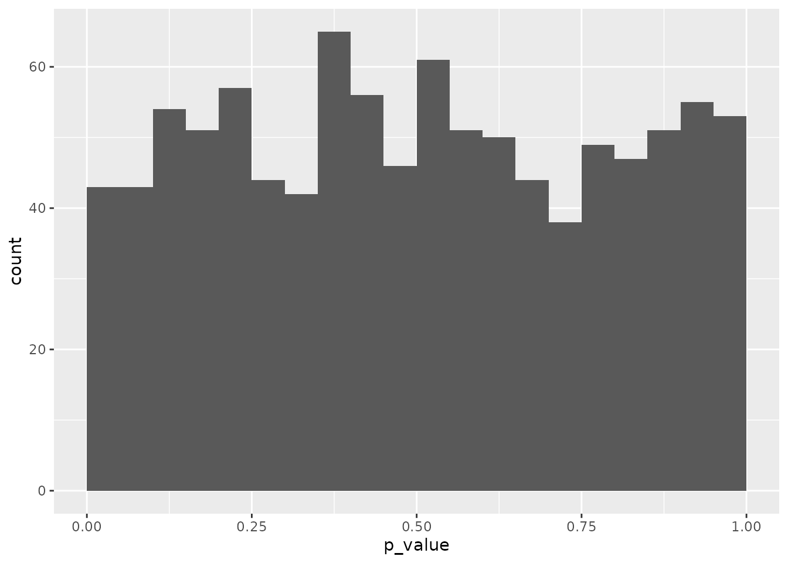
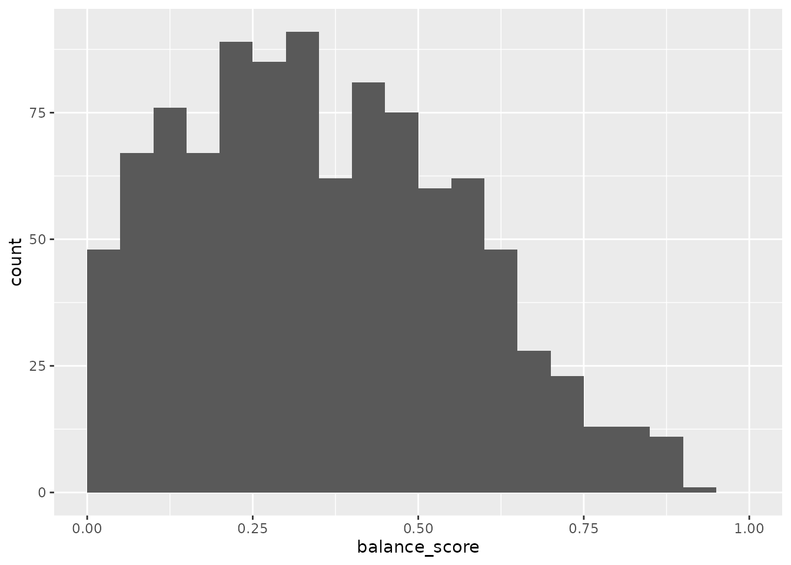
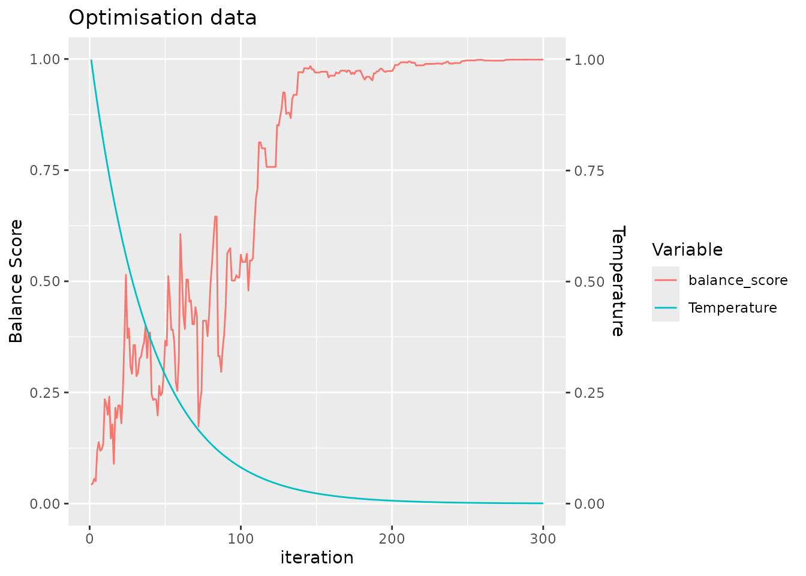
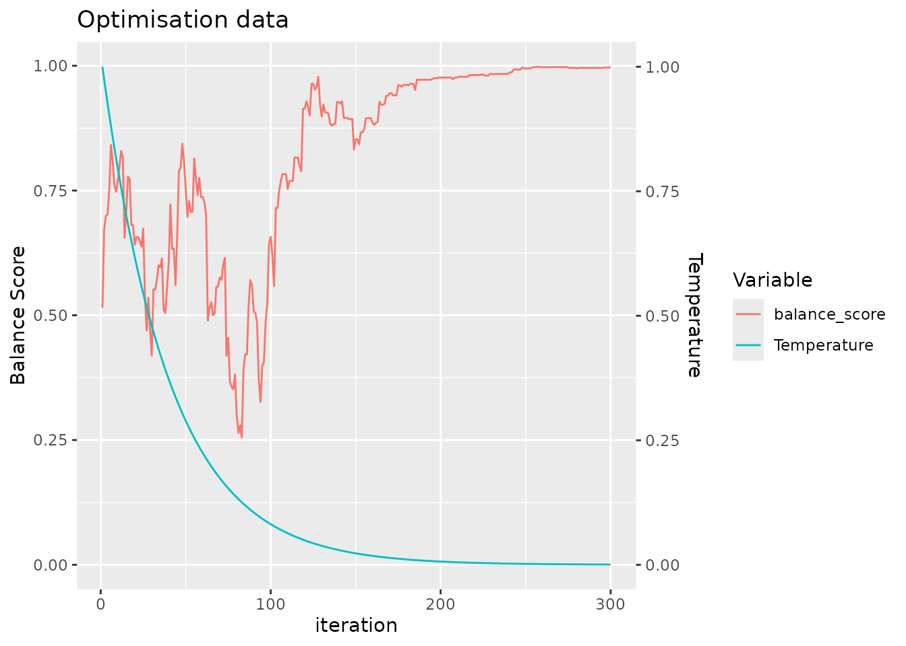
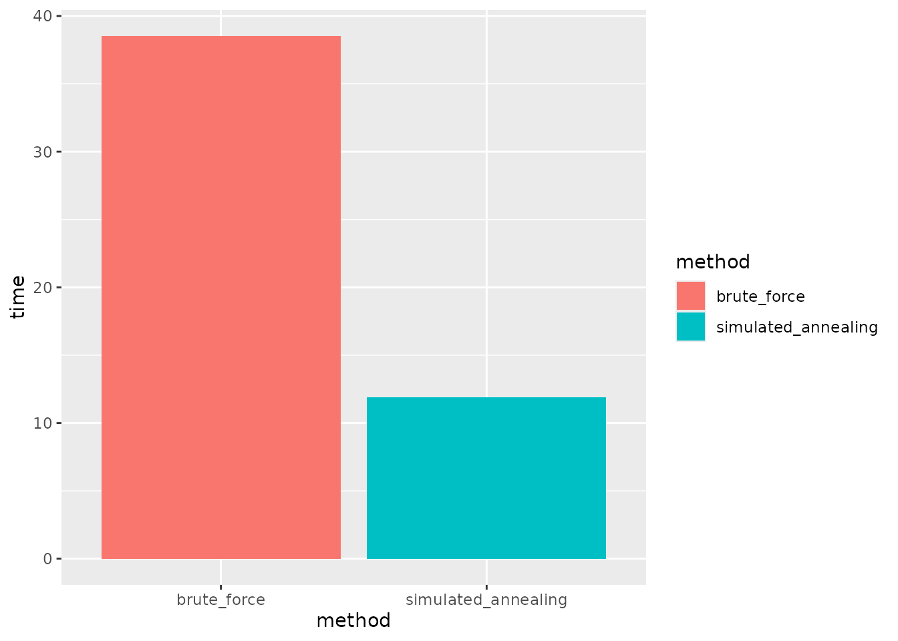
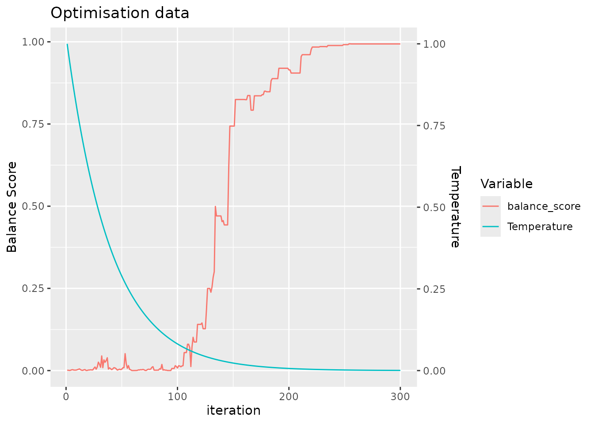
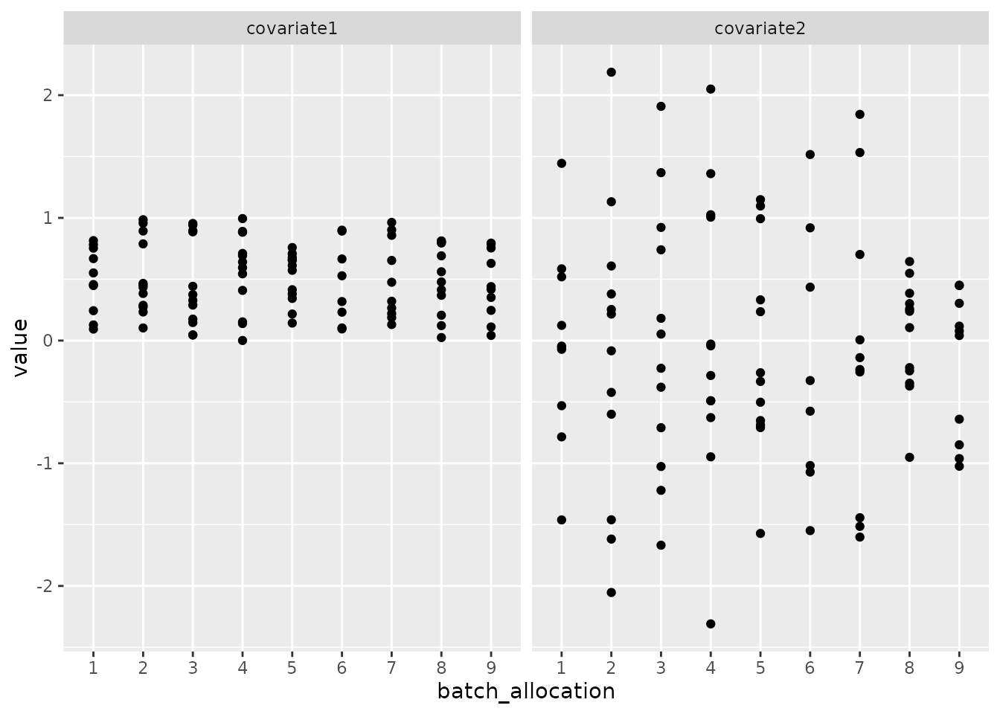
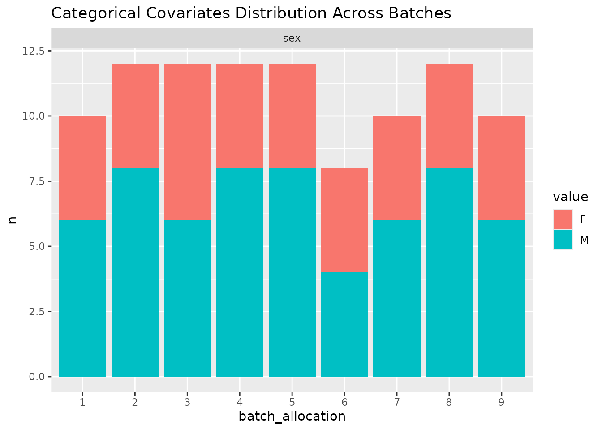

Methods for Allocating Samples to Batches
methods_for_sample_allocation_to_batches.RmdIntroduction
Especially as the costs of performing assays has decreased, there has been a move from analysing few samples from carefully controlled experiments to analysing many samples directly from patient population of interest. Controlled experiments are performed in experimental model systems in order that covariates can be held constant across all experimental units, whereas in clinical samples there will commonly be number of covariates that also impact upon the dependent variable of interest. Performing assays on a large number of samples requires that the be analysed in batches, which results in technical variation that should be accounted for in the analysis.
Here we demonstrate a tool to allocate pre-selected samples into these technical batches in a way that maximises the balance of specified covariates. By maximising the balance we maximise our ability to separate technical batch variation from biological effects of interest. This increases the precision of our estimates by reducing the uncertainty in coefficient estimates for our primary predictors variables, and hence gives greater statistical power to detect true effects.
Generate some simulated data with covarirates
First, we generate some simulated data with covariates. We will generate 98 samples with 3 covariates, and then allocate these samples to batches of 13.
toy_data = simulate_data(n_samples = 98, block_size = 2)
head(toy_data)
#> sample_id covariate1 covariate2 covariate3 block_id
#> 1 Sample1 0.2875775 -0.08336907 C block_1
#> 2 Sample2 0.7883051 0.25331851 B block_1
#> 3 Sample3 0.4089769 -0.02854676 B block_2
#> 4 Sample4 0.8830174 -0.04287046 B block_2
#> 5 Sample5 0.9404673 1.36860228 C block_3
#> 6 Sample6 0.0455565 -0.22577099 A block_3Randomisation
A common approach reported in the analysis of clinical samples is to simply randomise samples to different batches. Randomisation is frequently used in clinical trials to try to ensure that the treatment groups are balanced with respect to relevant covariates. In this circumstance, covariates for all patients are not known at the time when treatments are allocated and so randomisation our best option to ensure that the control and treatment groups are balanced with respect to these covariates. In statistical terms, there is no bias: the expectation of the value of any given covariates would be equal for both a control and a treatment group: i.e. that if we repeated the experiment many times, the average value of the covariate would be the same for both groups.
We can simply generate a random layout of our toy dataset of 98 samples to a batch size of 13 as follows:
single_layout = allocate_samples(toy_data,
batch_size = 13,
covariates = c("covariate1", "covariate2", "covariate3"),
method = "random",
blocking_variable = NA)
#> No blocking variable specified.
#> Covariate: covariate1 - continuous
#> Covariate: covariate2 - continuous
#> Covariate: covariate3 - categorical
#> Number of samples: 98
#> Joining with `by = join_by(covariate1, covariate2, covariate3,
#> sample_id)`
head(single_layout$layout)
#> covariate1 covariate2 covariate3 sample_id batch_allocation block_id
#> 1 0.2875775 -0.08336907 C Sample1 7 block_1
#> 2 0.7883051 0.25331851 B Sample2 7 block_1
#> 3 0.4089769 -0.02854676 B Sample3 3 block_2
#> 4 0.8830174 -0.04287046 B Sample4 6 block_2
#> 5 0.9404673 1.36860228 C Sample5 3 block_3
#> 6 0.0455565 -0.22577099 A Sample6 2 block_3The function allocate_samples returns a list with the
layout of samples to batches in the layout slot and the
probability that a covaraite does not differ between the batches
(appropriate for continuous or categorical variables depending upon the
input data type) in the results slot. With a given set of
samples, the sample size is fixed and thus calculating a
p-value for the difference in the covariate between the batches
is directly related to the underlying test statistic. The
results slot contains the p-value for the
difference in each covariate between the batches.
We can assess the balance of the layout across all of our specified covariates by calculating a balance score (defined in the following sections). This metric is in the range [0, 1], with higher values indicating better balance.
calculate_balance_score(single_layout[['results']]$p_value)
#> [1] 0.04197451Here we can see that the balance score of our layout is low (indicative of imbalance), despite the fact that the layout was generated randomly. This is because whilst randomisation ensures no statistical bias, it does not remove the impact of chance, in that there is still variance in the balance of the covariates between the batches.
In order to demonstrate this empirically, we can generate a large
number of random layouts and examine the distribution of the balance
score. As can be seen in the documentation, the
allocate_samples() function includes a random seed for
reproducibility, and so here we explicitly set a series of different
random seeds.
set.seed(123)
random_seeds <- sample(1:10000, 1000, replace = FALSE)
results_list <- lapply(random_seeds, function(seed) {
allocate_samples(toy_data,
batch_size = 13,
covariates = c("covariate1", "covariate2", "covariate3"),
method = "random",
blocking_variable = NA,
seed = seed)
})
# plot histrogram for a single covariate: covariate1
probability_covariate1 <- lapply(seq_along(results_list), function(i) {
data.frame(
iteration_number = i,
p_value = results_list[[i]][['results']] %>%
filter(covariate == "covariate1") %>%
pull(p_value)
)
})
plot_data_covariate1 <- do.call(rbind, probability_covariate1)
# plot histrogram of probability that covariate1 does not differ between the batches
plot_data_covariate1 %>%
ggplot(aes(x = p_value)) +
geom_histogram(binwidth = 0.05, boundary = 0) As expected given the lack of bias that randomisation guarantees, over many iterations we observe a uniform distribution of the p-value calcualted for a single variable. But note that within this set of random layouts, there are still many layouts with a low p-value: indicating that the covariate is not balanced between the batches despite randomisation.
In order to simultaneously assess the balance of multiple covariates between batches, we combine the p-values for all covariates which are each calculated by the appropriate statistical test. For this we used the established approach of calculating the harmonic mean of the p-values, which has the advantage over alternative options in that it does not require the restrictive assumption that covariates are independent. The distribution of the balance score across these many random layouts shows that there are few layouts with high score that indicate they are well balanced across all covariates.
balance_score <- lapply(seq_along(results_list), function(i) {
data.frame(
iteration_number = i,
balance_score = calculate_balance_score(results_list[[i]][['results']]$p_value)
)
})
plot_data_balance_score <- do.call(rbind, balance_score)
# plot histrogram of balance scores
plot_data_balance_score %>%
ggplot(aes(x = balance_score)) +
geom_histogram(binwidth = 0.05, boundary = 0) +
xlim(c(0, 1))
The “brute force” approach of allocating samples to batches would
simply then select the best layout from these random layouts. This is
implemented in the allocate_samples function using the
method = "best_random" argument for demonstration purposes
(though note that due to the use of different random seeds, this layout
may differ from that we have generated above). Here, we generate 1000
random layouts and then select the one with the best balance of the
covariates.
best_random_layout = allocate_samples(toy_data,
batch_size = 13,
covariates = c("covariate1", "covariate2", "covariate3"),
iterations = 1000,
method = "best_random")
#> No blocking variable specified.
#> Covariate: covariate1 - continuous
#> Covariate: covariate2 - continuous
#> Covariate: covariate3 - categorical
#> Number of samples: 98
#> Balance Score: 0.9195397
#> Joining with `by = join_by(covariate1, covariate2, covariate3,
#> sample_id)`
head(best_random_layout$layout)
#> covariate1 covariate2 covariate3 sample_id batch_allocation block_id
#> 1 0.2875775 -0.08336907 C Sample1 2 block_1
#> 2 0.7883051 0.25331851 B Sample2 5 block_1
#> 3 0.4089769 -0.02854676 B Sample3 7 block_2
#> 4 0.8830174 -0.04287046 B Sample4 3 block_2
#> 5 0.9404673 1.36860228 C Sample5 3 block_3
#> 6 0.0455565 -0.22577099 A Sample6 5 block_3We can see that the best random layout is clearly a superior layout to the common practice of performing a single randomisation as we did above. On the other side of the coin, there are still many possible layouts that have superior balance.
calculate_balance_score(best_random_layout[['results']]$p_value)
#> [1] 0.9195397Optimisation methods from machine learning
Even with the processing capabilities of modern desktop computers,
brute force approaches such as applied above are problematic since the
number of possible combinations quickly explodes. Since exhaustive
search is therefore impractical, we exploit machine learning
optimisation approaches in order to maximise the balance of the batches
that are generated. Specifically we utilise a simulated annealing
algorithm, which is a heuristic optimisation method that can efficiently
approximate the global optimum of a large search space. Interested
readers are directed towards the general introduction from wikipedia
[wikipedia_2023a]. Practically, we implement the method here as the
default method using to allocate samples to different batches (but can
be explicitly specified using the argument
method = "simulated_annealing").
optimal_layout = allocate_samples(toy_data,
batch_size = 13,
covariates = c("covariate1", "covariate2", "covariate3"),
iterations = 300,
plot_convergence = TRUE)
#> No blocking variable specified.
#> Covariate: covariate1 - continuous
#> Covariate: covariate2 - continuous
#> Covariate: covariate3 - categorical
#> Number of samples: 98
#> Balance Score of final layout: 0.9987868
#> Joining with `by = join_by(covariate1, covariate2, covariate3,
#> sample_id)`For clarity, we return a plot to make it easy for the user to confirm that the simulated annealing algorithm has been run with a sufficient number of iterations to converge, seen by the saturation of the balance score.
Accordingly, we also achieve a more balanced configuration than that of the best random layout.
calculate_balance_score(optimal_layout[['results']]$p_value)
#> [1] 0.9987868We can also compare the run time of the simulated annealing algorithm to that of the best random layout.
# rerun best_random_layout to calculate run time
runtime_brute_force <- system.time({
best_random_layout <- allocate_samples(toy_data,
batch_size = 13,
covariates = c("covariate1", "covariate2", "covariate3"),
iterations = 1000,
method = "best_random")
})
#> No blocking variable specified.
#> Covariate: covariate1 - continuous
#> Covariate: covariate2 - continuous
#> Covariate: covariate3 - categorical
#> Number of samples: 98
#> Balance Score: 0.9195397
#> Joining with `by = join_by(covariate1, covariate2, covariate3,
#> sample_id)`
# rerun optimal_layout to calculate run time
runtime_optimal <- system.time({
optimal_layout <- allocate_samples(toy_data,
batch_size = 13,
covariates = c("covariate1", "covariate2", "covariate3"),
method = "simulated_annealing",
iterations = 300)
})
#> No blocking variable specified.
#> Covariate: covariate1 - continuous
#> Covariate: covariate2 - continuous
#> Covariate: covariate3 - categorical
#> Number of samples: 98
#> Balance Score of final layout: 0.9987868
#> Joining with `by = join_by(covariate1, covariate2, covariate3,
#> sample_id)`
# plot run times
data.frame(method = c("brute_force", "simulated_annealing"),
time = c(runtime_brute_force, runtime_optimal)) %>%
ggplot(aes(x = method, y = time, fill = method)) +
geom_col() In addition to generating a more balanced layout, we see that the machine learning approach also achieves this with fewer iterations and in less run time.
Blocking
There is a adage on the design of experiments, commonly attributed to George Box, to “block what you can, randomise what you cannot”. We have discussed the limitations of randomisation in situations where the covariates for all samples are already known in advance. However, the advice to block variables is still pertinent in our situation, as blocking will completely remove the impact of the technical batch effect upon a blocked predictor variable rather than only mitigate against it. We also implement functionality to block samples within batches by a specified variable as follows:
optimal_layout_blocked = allocate_samples(toy_data,
batch_size = 13,
covariates = c("covariate1", "covariate2", "covariate3"),
blocking_variable = "block_id",
iterations = 300,
method = "simulated_annealing")
#> Blocking variable: block_id
#> Covariate: covariate1 - continuous
#> Covariate: covariate2 - continuous
#> Covariate: covariate3 - categorical
#> Number of samples: 98
#> Balance Score of final layout: 0.9976422
#> Joining with `by = join_by(covariate1, covariate2, covariate3, block_id,
#> sample_id)`plot an overview of the layout
In order to easily get an overview of the balance of a particular layout (a useful sanity check!), we provide a simple function to plot the levels of covariates across the batches.
plot_layout(optimal_layout_blocked, covariates = c("covariate1", "covariate2", "covariate3"))
#> $continuous
#>
#> $categorical
session info
sessionInfo()
#> R version 4.5.1 (2025-06-13)
#> Platform: x86_64-pc-linux-gnu
#> Running under: Ubuntu 24.04.2 LTS
#>
#> Matrix products: default
#> BLAS: /usr/lib/x86_64-linux-gnu/openblas-pthread/libblas.so.3
#> LAPACK: /usr/lib/x86_64-linux-gnu/openblas-pthread/libopenblasp-r0.3.26.so; LAPACK version 3.12.0
#>
#> locale:
#> [1] LC_CTYPE=C.UTF-8 LC_NUMERIC=C LC_TIME=C.UTF-8
#> [4] LC_COLLATE=C.UTF-8 LC_MONETARY=C.UTF-8 LC_MESSAGES=C.UTF-8
#> [7] LC_PAPER=C.UTF-8 LC_NAME=C LC_ADDRESS=C
#> [10] LC_TELEPHONE=C LC_MEASUREMENT=C.UTF-8 LC_IDENTIFICATION=C
#>
#> time zone: UTC
#> tzcode source: system (glibc)
#>
#> attached base packages:
#> [1] stats graphics grDevices utils datasets methods base
#>
#> other attached packages:
#> [1] ggplot2_3.5.2 dplyr_1.1.4 SampleAllocateR_1.0.0
#>
#> loaded via a namespace (and not attached):
#> [1] gtable_0.3.6 jsonlite_2.0.0 compiler_4.5.1 tidyselect_1.2.1
#> [5] tidyr_1.3.1 jquerylib_0.1.4 systemfonts_1.2.3 scales_1.4.0
#> [9] textshaping_1.0.1 yaml_2.3.10 fastmap_1.2.0 R6_2.6.1
#> [13] labeling_0.4.3 generics_0.1.4 knitr_1.50 tibble_3.3.0
#> [17] desc_1.4.3 bslib_0.9.0 pillar_1.11.0 RColorBrewer_1.1-3
#> [21] rlang_1.1.6 cachem_1.1.0 xfun_0.52 fs_1.6.6
#> [25] sass_0.4.10 cli_3.6.5 withr_3.0.2 pkgdown_2.1.3
#> [29] magrittr_2.0.3 digest_0.6.37 grid_4.5.1 lifecycle_1.0.4
#> [33] vctrs_0.6.5 evaluate_1.0.4 glue_1.8.0 farver_2.1.2
#> [37] ragg_1.4.0 rmarkdown_2.29 purrr_1.1.0 tools_4.5.1
#> [41] pkgconfig_2.0.3 htmltools_0.5.8.1